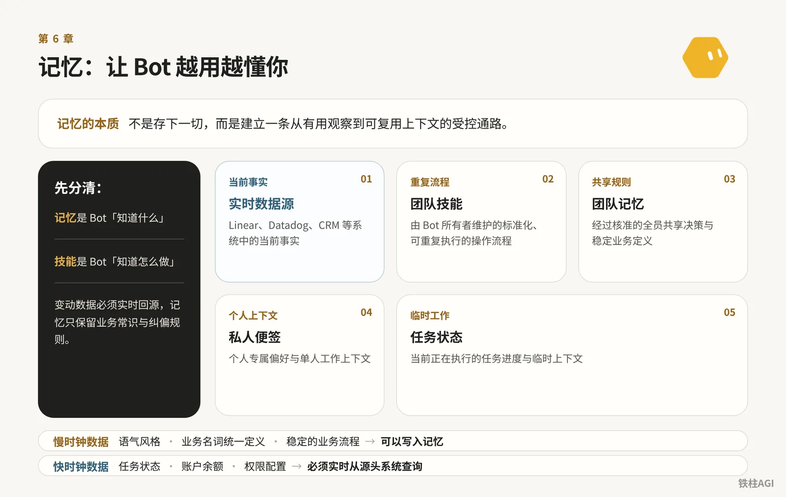
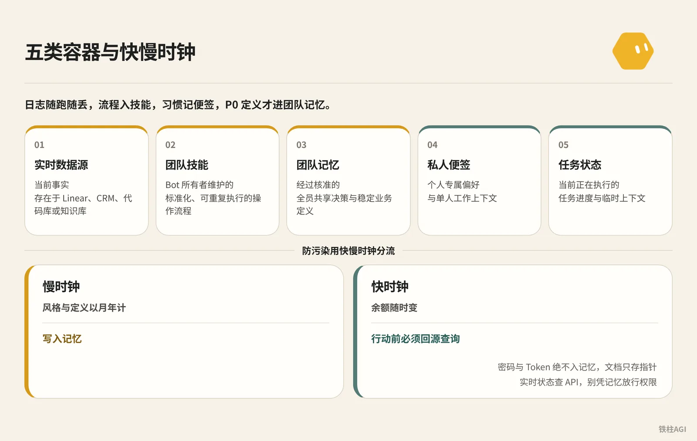
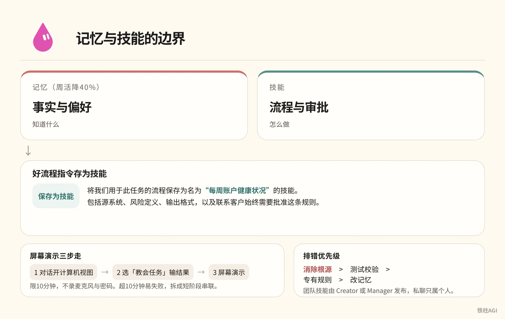
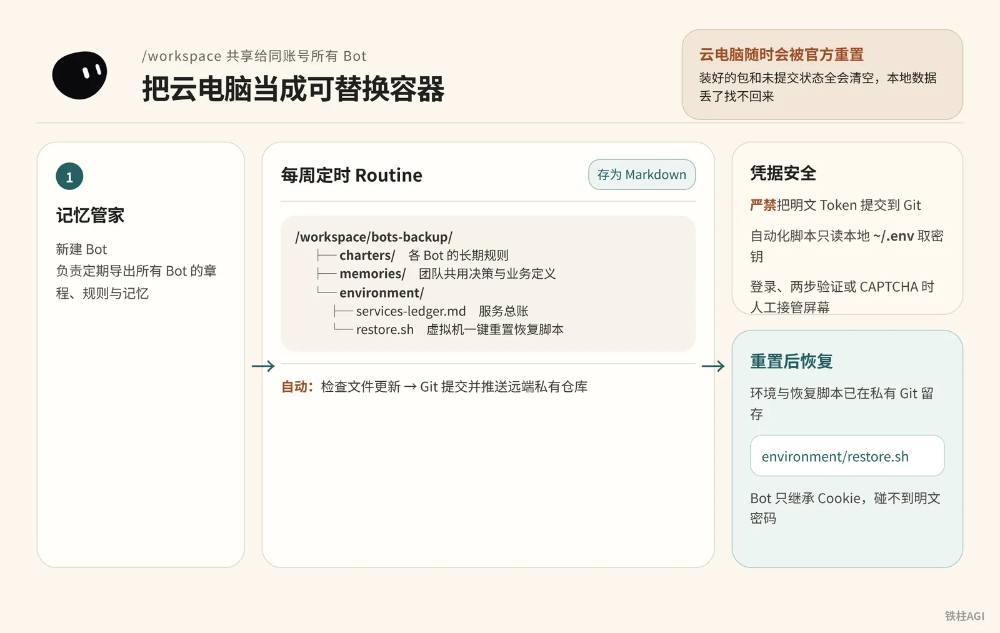

铁柱AGI · 20/60
第 6 章 记忆：让 Bot 越用越懂你
Bot 记忆 (memory (facts the bot keeps between chats))是跨会话的工作上下文。把所有聊天当记忆，容易把临时变通当规矩，甚至拿过期数据乱做决定。
- 搞清五类容器与快慢时钟，分清记忆与技能 (skill (a saved how-to the bot can reuse))。
- 团队协作定好晋升协议，变动数据实时回源核对。
- 用 Git 搭建备份流水线，云电脑重置也能完整还原。

6.1 官方记忆机制：Bot 究竟记住了什么
Bot 记偏好、事实与摘要，见 使用 Grok Bot。
别把 Bot 当数据库。
- 变动数据留源系统，重大决策核查源头。
- 记错或假设过时，直接对话纠正或删除。
- 安全与权限靠审批弹窗和 Auto-review 把关，绝不靠记忆。
- 长期规则首条讲清，单次任务当轮生效。
点顶部名称改配置。iPhone 复制 Bot：
- 继承：配置、技能、Routine (a task the bot runs on a schedule or a trigger) 与头像
- 不继承：对话、记忆与附件
后续还用建议在侧边栏设为「隐藏」，直接删会清空记录。坑点：所有 Bot 共用云电脑，删 Bot 不清文件与登录态，残留需手动进文件系统清理。
6.2 记忆分层：五类容器与快慢时钟

数据分为共享层与专属层，见《4.6 虚拟机、记忆与备份》 fs69.md。
五类容器模型见《Grok Bot Memory Engineering: How One Agent Learns With a Team｜rari》 fs57.md。
实时数据源 (LIVE SOURCE) -> 存在 Linear、Datadog、CRM、代码库或知识库里的当前事实
团队技能 (TEAM SKILL) -> 由 Bot 所有者维护的标准化、可重复执行的操作流程
团队记忆 (TEAM MEMORY) -> 经过核准的全员共享决策与稳定业务定义
私人便签 (PRIVATE NOTE) -> 个人专属偏好与单人工作上下文
任务状态 (TASK STATE) -> 当前正在执行的任务进度与临时上下文容器不能混用。日志随跑随丢，流程入技能，习惯记便签，P0 定义才进团队记忆。
防污染用快慢时钟分流。
- 慢时钟：风格与定义以月年计，写入记忆。
- 快时钟：余额随时变，行动前必须回源查询。
密码与 Token (a small chunk of text; AI usage is counted in tokens) 绝不入记忆，文档只存指针。实时状态查 API (a way for programs to talk to each other)，别凭记忆放行权限。
6.3 记忆与技能的边界：知道什么与怎么做

| 记忆(周活降40%) | 技能 |
|---|---|
| 事实与偏好 | 流程与审批 |
好流程指令存为技能：
将我们用于此任务的流程保存为名为“每周账户健康状况”的技能。
包括源系统、风险定义、输出格式，以及联系客户始终需要批准这条规则。屏幕演示三步走：
- 对话开计算机视图
- 选「教会任务」输结果
- 屏幕演示
限10分钟，不录麦克风与密码。@mvanhorn 提醒超10分钟易失败，拆成短阶段串联。fs46.md
Lauren Tan 排错优先级：消除根源 > 测试校验 > 专有规则 > 改记忆。团队技能由 Creator 或 Manager 发布，私聊只属个人。
6.4 团队记忆管理：写入协议、权限隔离与防冲突
多人共用 Bot，一人教错会影响全员。
观察 (OBSERVE) -> 分类 (CLASSIFY) -> 核实 (VERIFY) -> 晋升 (PROMOTE) -> 重核 (RECHECK)写入记忆遵循五步：
- 观察：捕捉纠偏与新决策。
- 分类：区分个人偏好与共用规则。
- 核实：核对文档或代码，严禁口头推测入库。
- 晋升：责任人确认后存入规则与权威链接。
- 重核：重大操作前或到期后复验源头。
claim: "对外发布 API 变更前必须完成安全评审"
scope: "team"
source: "https://intranet.example/docs/launch-checklist"
owner: "security-team"
status: "approved"
review_after: "2026-11-01"外部卡片核对出处与负责人后，发指令入库。
知识共享不等于权限共享：
- 个人 OAuth (a safe sign-in that gives an app access without sharing your password)：调 Gmail 等插件走本人授权，不盗用权限。
- 服务密钥：全员共享，遵循最小权限且通常只读。
- Slack (a work chat app) 避坑：群内查私密数据会暴露给全员。公频只发汇总，敏感数据回私聊。
冲突裁决：立即暂停关键操作 -> 查权威源 -> 责任人裁定 -> 更新源头 -> 修正记忆。
排查坏记忆（如特批当常规）：
- 查：让 Bot 列出记忆定位错误，溯源对话与任务。
- 改：先修源头文档，再发指令删改记忆。
- 验：换成员账号测试确认不拦截，纠偏历史工单。
6.5 记忆备份与恢复：把云电脑当成可替换容器

同账号所有 Bot 共用 /workspace（v0.68.1 分辨率 1920×1200）。
云电脑随时会被官方重置（2026-10-10 曾发生过），装好的包和未提交状态全会清空，本地数据丢了找不回来，背景见 fs69.md。
备份流程与凭据安全
建运维 Bot「记忆管家」，分四步备份到私有 Git。
- 新建 Bot 命名为「记忆管家」，职责写明负责定期导出所有 Bot 的章程、规则与记忆。
- 在
/workspace关联私有 Git 仓库，建好bots-backup/charters/（指令）、bots-backup/memories/（规则）与environment/（含脚本和services-ledger.md）。 - 配每周定时 Routine，把配置与记忆存为 Markdown (a simple way to format text with symbols)。
- 由 Routine 自动跑 Git 命令提交并推送远端私有仓库。
备份流程与凭据安全
/workspace/
└── bots-backup/
├── charters/ <- 各 Bot 的长期规则 (如 researcher.md, writer.md)
├── memories/ <- 团队共用决策与业务定义 (如 definitions.md)
└── environment/
├── services-ledger.md <- 服务总账，记录工具依赖与启动命令
└── restore.sh <- 虚拟机一键重置恢复脚本- 严禁把明文 Token 提交到 Git。自动化脚本只读本地
~/.env取密钥。 - 遇到登录、两步验证或 CAPTCHA 时人工接管屏幕。Bot 只继承 Cookie，碰不到明文密码，详见 使用 Grok Bot。
6.6 开箱即用的实战提示词 (prompt (the instruction you give the AI))
三层指令框架
建 Bot 别写笼统简介，用三层框架明确规则、职责和当前聚焦。详见 fs46.md。
三层指令框架
BASE INSTRUCTIONS (基础规则，本账号所有 Bot 通用)
- 涉及产生财务支出、向外部发送任何信息、删除文件等操作前，必须等待人工确认。
- 当结论涉及重要业务决策时，必须调取当前权威来源进行核对，严禁单凭记忆作答。
- 若执行受阻，用单行明确说明受阻点，禁止擅自寻找不可靠的绕行方案。
- 阶段性工作交接结果统一写入 /workspace/shared/handoffs/ 目录。
ROLE (角色职责)
- 你的身份：每周账户健康状况审计专员。
- 你负责的固定作业：获取客户产品用量与工单信号，标记流失或扩张迹象。
- 验收标准：每项结论必须附带源系统监控图表或工单链接。
- 允许操作：读取日志、检索系统指标、在共享目录生成评估报告。
- 严禁操作：未经明确批准，绝不私自联络客户，绝不修改账户权限。
CURRENT FOCUS (当前重点)
- 本周重点核查用量环比下降超过 30% 的企业级客户名单。转为团队技能
任务跑通后，直接发指令沉淀为技能。
转为团队技能
请将本次执行的工作流整理并保存为团队技能，名称设为“客户流失风险排查”。
要求包含以下内容：
1. 触发场景与必需的前置凭据。
2. 调取指标数据的具体步骤与判定阈值。
3. 输出结果的格式规范（必须包含数据源链接）。
4. 明确安全红线：向客户发送邮件或调整账户配置必须经由人工批准。
完成后在对话中回复技能概要。写入共享记忆
负责人审批过的规则，带上来源和责任人写入。
请为全团队记住以下判定规则：
对于所有对外发布的 API 变更，必须在发布前检查现行上线清单，并获取安全团队的正式签字评审。
若上线流程发生变更，以上线清单源文档为准，记忆仅作为指引。
来源文档：https://intranet.example/docs/api-checklist
责任人：security-team
复核日期：2026-11-01部署记忆管家
在「记忆管家」Bot 里，发指令配好自动备份 Routine。
你是本账号的记忆管家。你的职责是定期归档全账号所有 Bot 的章程与共享记忆。
请配置一个每周运行的例行任务（Routine）：
1. 提取所有 Bot 当前的 Description/Instructions 规则，在 /workspace/bots-backup/charters/ 下按 Bot 名称分别保存为 .md 文件。
2. 提取当前所有已保存的团队共用记忆，整合保存为 /workspace/bots-backup/memories/team-memory.md。
3. 检查文件是否有更新。若有变更，自动执行 git add .、提交并推送至已配置好的私有 Git 仓库。
4. 若 Git 推送失败，在当前对话中告警并说明报错信息；若无变更则保持静默，不要频繁推送无意义通知。坏记忆清理
发现引用了错误或旧规则，发指令直接纠偏清理。
请检查并列出你当前记录的所有团队记忆中涉及“企业客户续约审批”的条目。
删除其中“所有企业客户续约必须经由 VP 逐笔批准”的内容。
该规则仅为上周特定情况下的临时特例，不是长期标准。
从现在起，企业客户续约标准重新以财务知识库的正式文档为准：https://intranet.example/finance/renewals
确认修改后，请向我展示修正后的相关记忆列表。6.7 经典案例复盘
案例 1：SpaceXAI 数据分析 Bot
SpaceXAI 团队要查询 45,000 张表的超大数仓。
- 别把庞大数据硬塞进记忆。他们给 Bot 配置只读数仓凭证，把找表和查询沉淀为技能库。
- 记忆只保留指标口径和纠偏规则，变动数据靠实时调取计算。
详见 fs57.md。
案例 2：多 Bot 协作推文画像流水线
0xlangeai 搭建整理员、分析师、设计师、工程师四个 Bot 跑推文画像流水线。
- 不同 Bot 无法读取彼此的聊天记录。
- 跨 Bot 协作要靠文件系统传递成果。整理员生成
tweets.md，分析师读取后产出profile.md，设计师据此出design.md，工程师拉取代码构建上线。
详见 fs69.md。
案例 3：Jon ONeill 的管道派单系统
Jon ONeill 自动化处理跨 Gmail、Slack、ServiceTitan 和客户门户的工单排期。
- 单个全能调度 Bot 承担所有规则容易混乱出错，最终只能停用。
- 任务切分给专职 Bot：Gary 盯 Gmail，Steve 查 ServiceTitan 工期，Quinn 发短信，Sarah 对接 Slack 员工，Atlas 统筹。
- 拆细职责后每天稳定处理 5 到 6 个紧急工单，10 分钟内完成全流程排期。
详见 fs46.md。
6.8 容易踩的坑
- 变动数据走实时查询：库存别存记忆，防 Bot 拿旧数据误判。
- 配置必写脚本：云电脑手动配置，重置全归零。
- 私聊指令别全队用：特批直接共用会污染团队行为。
- 分 Bot 做不了隔离：同账号共享文件，靠权限与 Ask-first 审批。
- 密码别发聊天框：防日志泄露，走安全凭据或人工接管。
- Slack 别查私密数据：公开频道提问，容易把隐私打在公屏。
6.9 做完怎么验收
测记忆边界直接跑社区作者 rari（@0xwhrrari）设计的 M01-M05 用例。
M01 个人偏好隔离测试 -> 成员 A 在私聊中设定个性化偏好，使用成员 B 账号发起提问，确认 B 绝不继承 A 的私聊偏好。
M02 团队规则晋升测试 -> 成员 A 提交一条经审批的团队规则并写入团队记忆，成员 B 发起任务时应生效该规则，但看不到 A 当时的私聊对话。
M03 状态时效回源测试 -> 在团队记忆中保留一条旧状态，在源系统修改为新状态。向 Bot 提问，Bot 必须调取最新源数据，而不是采信记忆中的旧状态。
M04 冲突自动阻断测试 -> 两个成员分别向 Bot 给出互相矛盾的业务说法。Bot 应识别出冲突并主动停止高风险操作，指出需要责任人裁决，而不是悄悄采纳最后一条说法。
M05 共享渠道边界测试 -> 在 Slack 共享频道线程中，要求 Bot 调用某成员的个人连接器。Bot 必须正确发起审批，且回复内容只包含团队可见的脱敏结论。这里必须用两个不同的真实团队账号交叉测，单个账号测不出隔离边界。
- 登录 GitHub 或 GitLab 私有库，确认
bots-backup/charters/下各 Bot 的规则文件已提交，规则与权限没丢。 - 检查
bots-backup/memories/team-memory.md，确认团队判定规则与源系统链接完整。 - 在云电脑测试目录跑环境恢复脚本，确认依赖与目录无报错，单行脚本能直接拉起服务。
6.9 做完怎么验收
bash /workspace/bots-backup/environment/restore.sh延伸阅读
- 官方文档：使用 Grok Bot
- 社区文章：rari《Grok Bot Memory Engineering: How One Agent Learns With a Team》 fs57.md
- 社区文章：《4.6 虚拟机、记忆与备份》 fs69.md
- 社区文章：Matt Van Horn《Every Grok Bot Hack I Know (Aug 2026)》 fs46.md